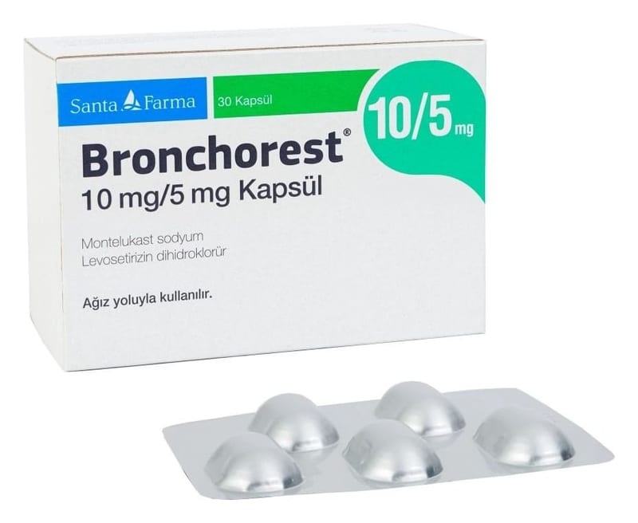

Bronchorest 10 mg/5 mg Kapsül ,30 Kapsül

Ne için kullanılır
KT · Bölüm 1BRONCHOREST®granüle toz formunda 10 mg montelukast ve tablet formunda 5 mg levosetirizin dihidroklorür içeren, mavi-yeşil renkli sert sığır jelatin kapsülleridir.
Levosetirizin alerji tedavisinde kullanılan bir antihistaminiktir. Antihistaminik ilaçlar histaminin etkisini yok eder, alerji belirtilerini ortadan kaldırır. Montelukast lökotrienler adı verilen maddeleri engelleyen bir lökotrien alıcısı (reseptör) antagonistidir (karşıt etki gösteren). Lökotrienleri engelleyerek astım belirtilerini iyileştirir ve alerjik nezleyi iyileştirir. Montelukast steroid (kolesterolle ilişkili, yağ yapıda bir organik bileşik) değildir.
BRONCHOREST®kapsüller, 30 ve 90 kapsül içeren Alu/Alu-Alüminyum folyo blister ambalajlarda piyasaya sunulmaktadır.
BRONCHOREST®alerjik rinit (burun iltihabı) ve alerjik rinitle birlikte olan astım tedavisinde ve belirtilerinin giderilmesinde kullanılır.
BRONCHOREST®, ayrıca, 15 yaş ve üzeri hastalarda antihistaminiklere dirençli, alerjinin yol açtığı bir deri hastalığının (kronik idiyopatik ürtiker) tedavisinde kullanılır.